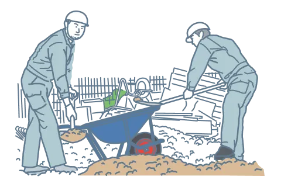
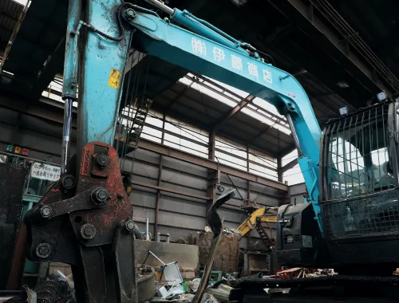

業界初の新サービス JOBJINなら 解体費用が他社よりも安くなります！
POINT
JOBJINは仲介手数料が 完全に無料 だから 解体費用が安くなる！


JOBJIN独自の仕組み02
JOBJIN認定事業者から
ベストな優良解体業者をご紹介
独自の選定基準で
工事会社を評価
- 解体工事実績が豊富
- 賠償保険に加入している
- 免許・許可書一式を取得保有している
- 厳正な現地調査を行い見積を作成し不当な追加費用を請求しない
- 工事前に近隣への挨拶を行う
- 工事中の近隣クレームがあった際は、早急に責任を持って対応する
- 不要、不快な営業を行わない
- 工事前に書面をもって契約書を交わす
- 施主様の個人情報保護を厳守し、外部に漏らさない
- 廃棄物は正しく処理し、不法投棄を行わない
- 解体業者の人柄
お付き合いのある数百の解体業者の中から、
お客様の要望に沿ったベストな一社をご紹介します
無理な工事受注や過当競争を避けるため
ご紹介は一社に限らせて頂いております
JOBJINが実践する
三方良しの仕組み
三方良しの仕組み
JOBJIN独自の仕組み03
万が一に備えて
解体業者・近隣とのトラブル時も
ダブル保証で安心
保証1
解体業者とのトラブルに対する保証
完工保証

解体業者が万が一完工できなくなった場合は、JOBJINが代わりの業者を選定し工事を完工いたします。
差額保証
解体業者の変更によって工事費用に差額が生じた場合は、JOBJINが差額を保証いたします。
着手金保証
着手金の支払い後に、解体業者が倒産などで工事を履行できなかった場合、その代金をJOBJINが保証いたします。
保証2
近隣とのトラブルに対する保証
JOBJINが紹介する解体業者は、もれなく損害賠償責任保険に加入
しているため、近隣トラブルの保証も万全です。
保証対象となる近隣トラブルの例
誤って近隣の建物を
壊してしまった
工事が原因で地盤が
緩んで隣の家が傾いた
工事の振動で近隣建物
の壁に亀裂が発生した
工事の振動で土砂崩れ
が発生した
誤って隣の家との共有
物を解体してしまった
その他解体工事が原因
で近隣に被害が出た
JOBJINなら任せて安心
解体工事の最初から最後まで
しっかりサポート
サポート内容（一部）
解体工事の
ご相談対応
優良解体業者の
ご紹介
工事料金の
値引き交渉代行
お見積り後の
無料キャンセル代行
地域の補助金
アドバイス
不用品・残置物の
回収や処分

解体工事の
実施
行政手続き
サポート
JOBJIN認定事業者による
安心の工事品質をお約束します
解体工事の様子を一部ご紹介
近隣へのご挨拶
事前に近隣へのご挨拶を実施。工事内容や期間、騒音や振動、埃などの可能性や対応についてお伝えし、住民の方の理解を得てクレームの発生を抑えます。
防音・養生シート、散水
工事中は騒音を抑える防音シートの設置や粉塵やほこりを抑える養生シートの設置・散水などを徹底し、近隣に迷惑をかけないように配慮します。

マナーある解体工事
違反駐車、たばこや空き缶のポイ捨て、時間外作業などによる近隣への迷惑行為を行わずマナーある解体工事を実施します。
整地工事
解体後は産業廃棄物を処理して清掃を行い、次の土地利用ができるように綺麗で平らな地面に仕上げます。
お客様の声
滋賀県大津市
K様
見積に来てくださった解体業者さんが気さくな人で不安に思った事を直接聞けて、納得出来たので依頼する事に決めました。
大阪府高槻市
I様
漫画を読むまでは見積サイトが手数料を取っている事も知らなかった。出来るだけ安く解体をしたいと思い依頼しました。このサービスはありがたいです。
京都府京都市
T様
「他社へも見積りは取るべき」とアドバイスを受け、この会社は信頼できるなと思い依頼しました。見積金額も1番安く解体業者さんにも良くして頂きました。

京都府京都市山科区
H様
実家じまいをするにあたって、どう手をつけて良いか困っていたところ、親切にいろんな流れを説明して頂き、家族みんな安心してお任せする事ができました。
JOBJINでの解体工事は、
環境にもやさしい
当社のSDGsへの取り組み

解体によって排出される廃材を
リサイクルすることで廃棄量を減らし、
地球環境にやさしい解体工事を実現しています。
サービスご利用の流れ
STEP 02
解体業者のご紹介
お客様のご状況を伺った後、JOBJIN認定業者から優良解体業者をご紹介いたします。
ご紹介後は解体業者と直接やりとりを行っていただきますが、業者に伝えにくい場合など、必要に応じてJOBJINにもご相談いただけます。
STEP 03
現地調査・見積のご提出
解体業者のほうで現地調査を行い、見積をご提出させていただきます。
STEP 04
ご契約
お見積りや工事内容にご納得いただけたらご契約手続きに入ります。
万が一、ご希望に沿わない場合は遠慮なくお断りいただいて構いません。
解体業者へのキャンセル連絡は、JOBJINが無料で代行します。
JOBJINからお客様へのお約束
他社の見積チェックも可能
現地調査して適正見積
見積後のキャンセル無料
しつこい営業電話無し
お見積は完全無料です
ぜひお気軽にJOBJINにご相談ください
よくあるご質問
木造の建物でも依頼可能ですか？
もちろん依頼可能です。木造の場合でも費用を抑えた見積をご提出できます。
廃金属の回収とはどんな物でも可能ですか？
ご家庭から出てくる金属類でしたらほとんど可能ですが、例えば金属に油が大量に付着した状態の物やプラスチック(少量なら可能)が付いている場合、引取不可になる可能性があります。
また工場の整理などで金属が大量に出てくる時も対応しております。ご相談ください。
解体費用の相場ってあるんですか？
解体費用にはある程度の相場があります。
・建物の構造種別(木造、鉄骨造、鉄筋コンクリート造など)
・延床面積(建物内の床面積)
・立地条件(隣接する道路幅や解体業者の車を駐車出来るスペースの有無)
これらの情報で概算見積は算出可能ですが、正確な解体費用の見積には業者さんに現場を調査してもらう必要があります。この現場調査では、建物の内部の状況についても確認しますので同席していただけるとスムーズです。建物を解体するにあたり、どのような重機を搬入する必要があるのか、重機搬入のための道路の確認も行います。
解体現場が自宅から遠くてもお願いできますか？
可能です。(場所によっては難しい場合もあります) ただし、解体物件の中を確認できない場合は、お見積りから追加で費用がかかる場合がありますのでご注意ください（外観から見えない井戸や煙突、構造などによる）。解体工事の見積を作成する際は、基本的に施主様に現地調査の立ち合いをお願いしております。
解体工事に品質の差はあるのですか？
解体工事は最終的に「何もない状態にする」のでできる限り安く抑えたいと思われるかもしれませんが、近隣対策ができていない、不法投棄、追加請求、工事中の事故などといった工事の過程で大きな差が出てきます。特に建替えの場合はそこに住み続けることになるので、近隣と無用なトラブルを生んでしまう事は絶対に避けなければなりません。価格だけで粗悪な業者を選ばずに、近隣に十分配慮しながら、要望した施工を実現できる良質な解体業者に依頼しましょう。
解体工事の流れ
STEP 01
行政へ解体工事届出書提出
解体業者が提出を代行いたします。お客様はご契約時に委任状をお渡しいただければ問題ありません。
STEP 02
電気・ガス・電話等の使用停止
水道はメーターを残しての使用停止が一般的です。
これらの手続きが困難な場合はご相談ください。
STEP 03

近隣へのご挨拶
工事の数日前に解体業者が工期や連絡先の周知を兼ねて行います。お客様にご同行いただくのが理想です。
STEP 04
解体工事着工
STEP 05
解体工事竣工・お引渡し
STEP 06
ご請求書到着・ご入金
STEP 07

取り毀し証明書ほか必要書類到着
建物を解体した際に必要となる書類が届きます。「取り毀し証明書」は解体業者が発行します。
STEP 08
建物滅失登記（解体工事完了後1ヵ月以内）
登記されている建物を解体した場合に、登記情報を無くす手続きを行う必要があります。
運営会社
JOBJINを運営する株式会社伊藤商店は、金属スクラップの買取や再生処理を行う創業70年の会社です。70年の再生処理事業の中で培ってきた優良解体業者との繋がりを活かし、安くて高品質な解体工事を提供しています。

会社概要
- 会社名
- 株式会社 伊藤商店
- 事業内容
-
建物解体・各種工事全般のスクラップの引取り
金属加工の切削クズ・不要機械等の引取
金属スクラップの再生処理
金属全般スクラップの買取
リユース品買取
- 創業
- 1952年（昭和27年）
- 資本金
- 5,000万円
- 代表取締役
- 伊藤博永
- 従業員数
- 60名